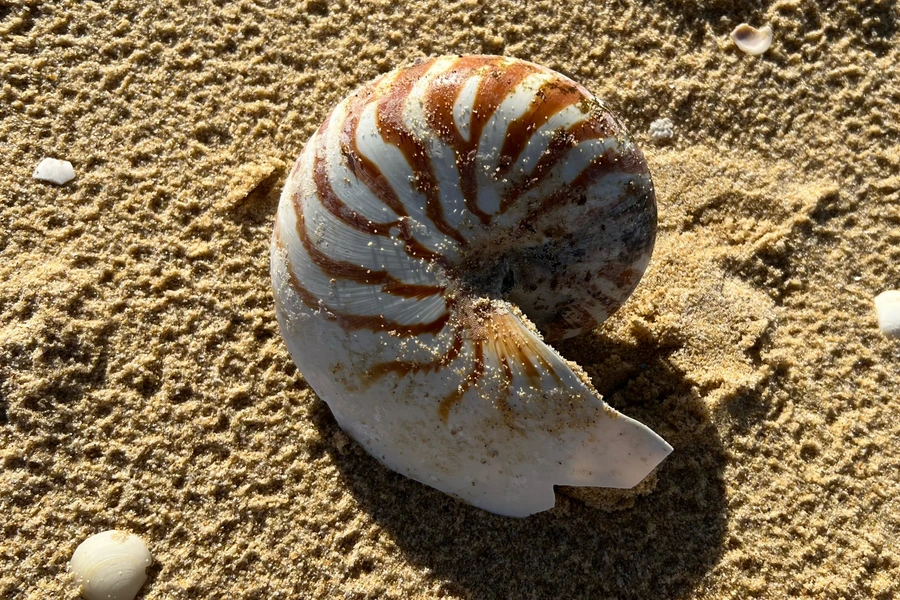

软体动物 · 动物界
鹦鹉螺 Nautilus pompilius

拥有螺旋形外壳的古老头足类，被称为“活化石”，靠调节壳内气室浮沉，夜间上浮捕食，是中国国家一级保护动物。
- 分类
- 门软体动物门纲头足纲目鹦鹉螺目科鹦鹉螺科属鹦鹉螺属
- 栖息环境
- 热带珊瑚礁外缘的陡坡与深水区，白天在 300–400 m，夜间上浮到约 100 m
- 地理分布
- 印度洋至西太平洋热带海域，包括菲律宾、印度尼西亚、澳大利亚北部和斐济一带
- 保护级别
- 暂无评估；中国国家一级保护动物；列入 CITES 附录Ⅱ
物种志
鹦鹉螺的软体藏在螺旋形的钙质外壳中，壳面有褐色与白色相间的条纹。壳内被隔板分成数十个气室，动物只住在最外层，通过调节气室中的气体和液体来控制浮沉，原理类似潜水艇的水舱。它有约 90 条触腕，触腕上没有吸盘，而是靠黏液和沟槽抓握食物。壳径一般 15–20 cm，最大约 25 cm，外壳形状优美，常被当作工艺品。
鹦鹉螺分布于印度洋至西太平洋的热带海域，栖息在珊瑚礁外缘的陡坡和深水区。它具有明显的昼夜垂直迁移行为：白天多在 300–400 m 深的水层休息，夜间上浮到约 100 m 处捕食小虾、小鱼，也取食腐肉，靠漏斗喷水缓慢游动。鹦鹉螺性成熟很慢，需要 10 年以上，寿命可达 20 年；雌螺每次只产数枚至数十枚卵，卵大，孵化期约 8–12 个月，幼体一出生就带着外壳。由于外壳被大量采集为工艺品，加上深海拖网的影响，鹦鹉螺野生数量下降，全部鹦鹉螺科物种都被列入 CITES 附录Ⅱ，中国将其列为国家一级保护动物。
形态与习性
- 食性捕食小虾、小鱼，也取食腐肉
- 壳径一般 15–20 cm，最大约 25 cm
- 寿命可达 20 年
- 繁殖产卵数枚至数十枚，卵大，孵化期约 8–12 个月
- 栖息深度白天多在 300–400 m，夜间上浮到约 100 m 捕食
- 浮沉通过调节壳内气室的气体与液体控制浮力
趣味知识
- 鹦鹉螺是头足类中少数保留外壳的类群，其近亲在 5 亿年前的海洋中就已存在。
- 它通过壳内一串气室像潜水艇一样调节浮沉，是仿生学研究的对象。
- 凡尔纳《海底两万里》中的潜艇“鹦鹉螺号”和美国第一艘核潜艇都以它命名。